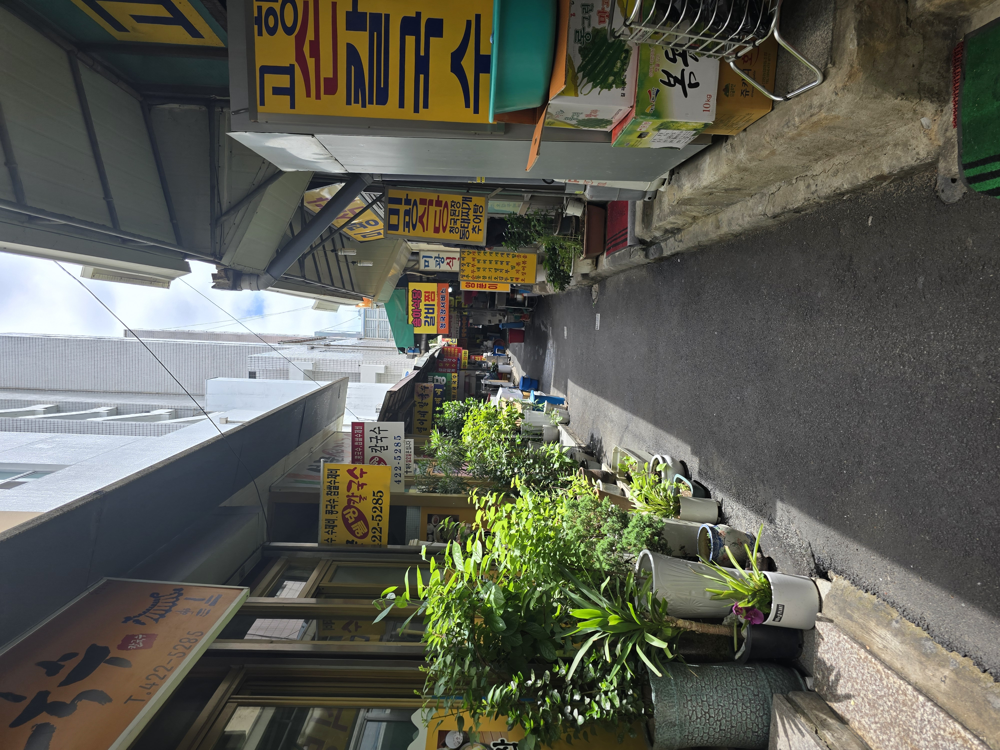
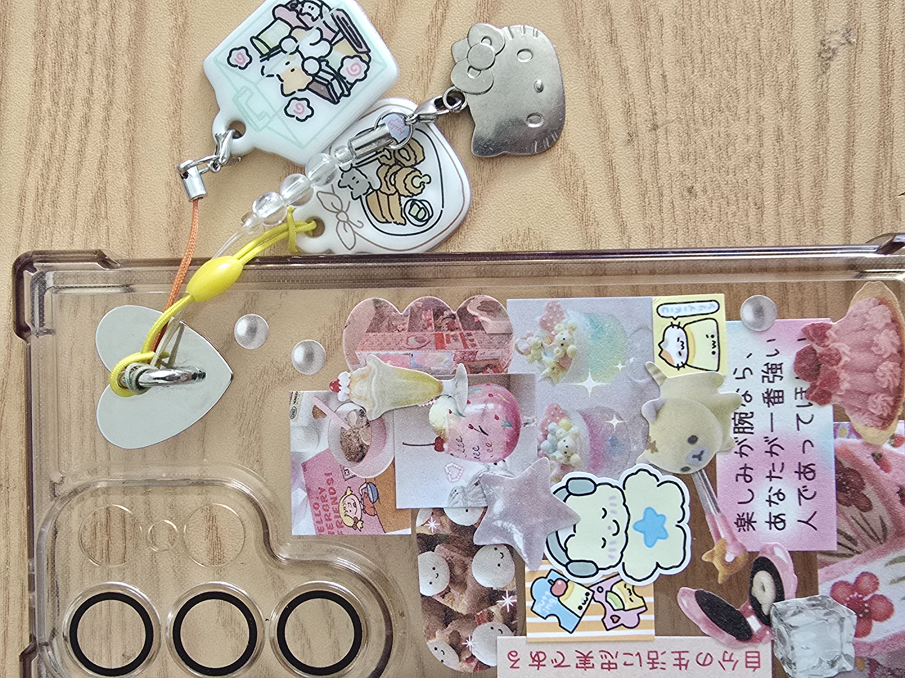
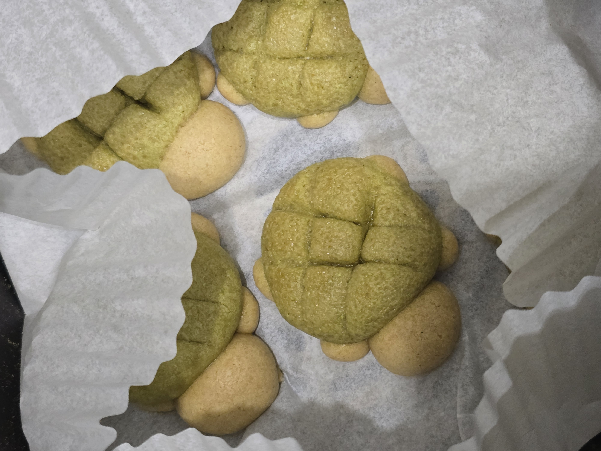
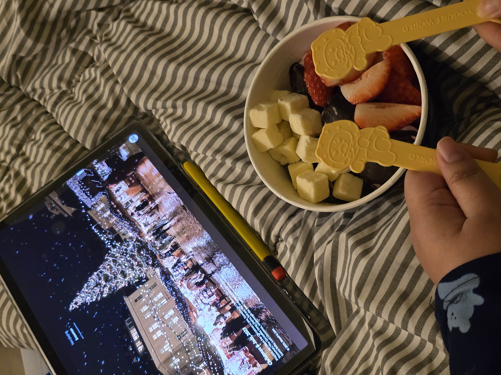
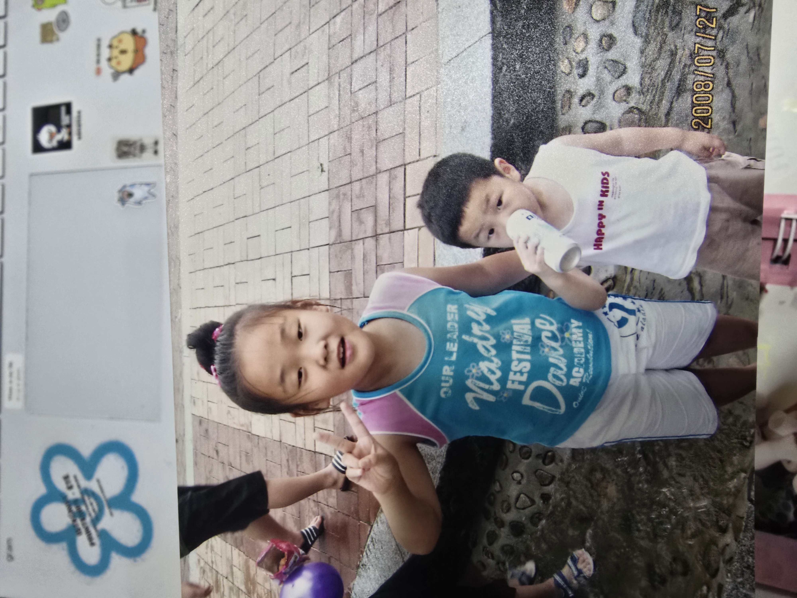

불안, 믿음, 소망
HJ:ARCHIVE
불안, 믿음, 소망
당장은 성과가 없어도 언젠가는 해낼 거라 믿습니다.
한걸음, 한걸음 나아가다 보면
뒤돌아 봤을 때 제가 있던 자리가 도로의 야경처럼
빛나고 있을 거라 생각합니다.
When I first got a taste of coding, I realized that I could create a website with my own hands.
That realization led me to study Computer Engineering.
One day, I came across a website that used interaction. As scenes changed with scrolling and the screen responded
to the user’s movement, my body reacted before I could even think. 'Ah, a website can be this sensory.'
Since then, I have continued learning and challenging myself with the hope of creating screens
that offer new experiences while helping users navigate without feeling lost.
처음 코딩을 맛본 저는 내 손으로 웹 사이트를 만들 수 있다는 걸 깨닫고 컴퓨터공학과에 진학하게 됩니다.
어느날, 인터랙션을 활용한 웹사이트를 보게 됩니다. 스크롤을 따라 장면이 바뀌고 화면이 사용자의 움직임에
반응하는걸 보자 몸이 먼저 반응했습니다. '아, 웹사이트도 이렇게 감각적일 수가 있구나.'
새로운 경험을 주면서 사용자가 길을 잃지 않는 화면을 만들고 싶다는 생각에 계속 배우며 도전하고 있습니다.
작업물과 취미 활동, 그리고 추억





저를 둘러본 후 남기는 짧은 후기란입니다.
Music: Clair de lune · CC BY 3.0